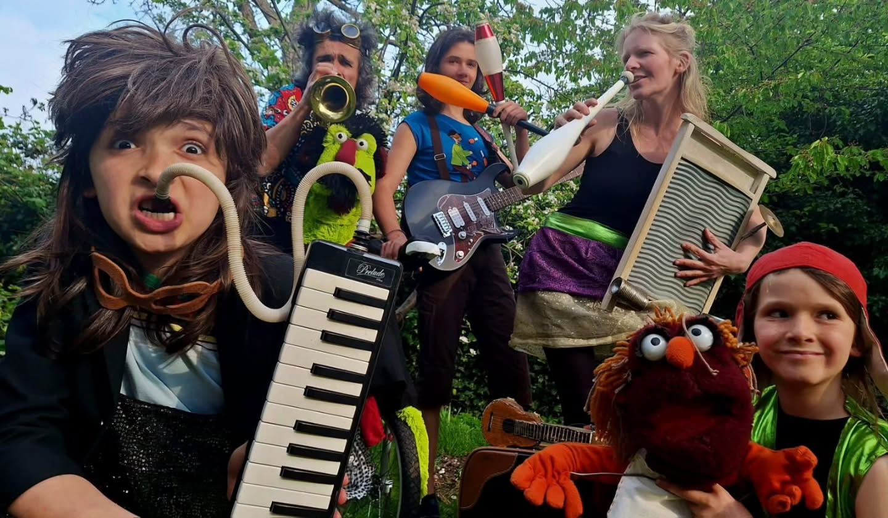
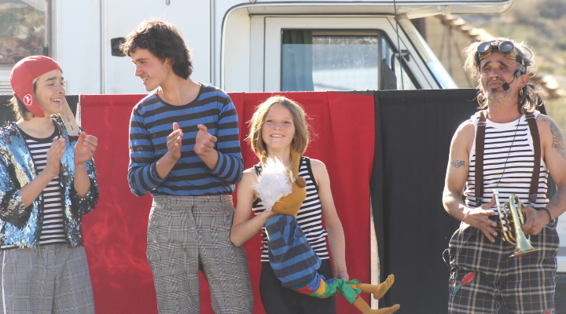
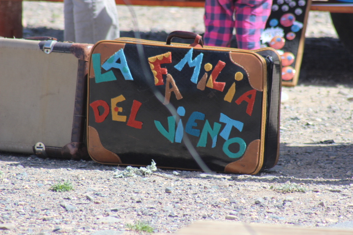
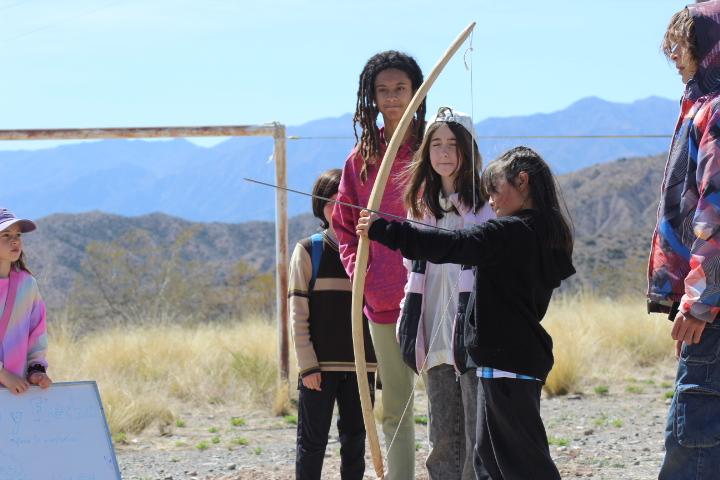
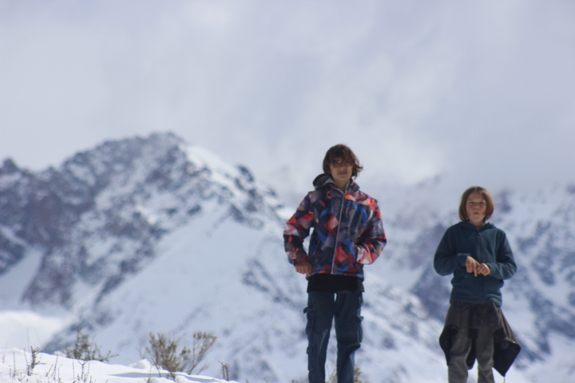

Una familia de artistas en movimiento. Creamos espectáculos y encuentros donde el arte, el juego y la vida se entrelazan.

Somos una familia de artistas que recorre caminos con instrumentos, títeres, juegos y espectáculos. El viaje es también una forma de aprender, compartir y encontrarnos con otras familias, artistas, campesinos y comunidades.
«Cada lugar es diferente. Cada encuentro lo construimos con quienes nos reciben».
Treinta minutos de circo, títeres, música en vivo, clown, humor y participación del público. Una propuesta para plazas, calles, festivales, escuelas, teatros y espacios culturales.

En Ráquira construimos un espacio cultural con madera y barro, un lugar para compartir el arte y la vida comunitaria. Allí se encontraron el circo, la música, el aprendizaje, la siembra y el trabajo con la tierra.
La Mazamorra fue nuestro nido: un teatro propio, experiencias con telas acrobáticas, música y circo para niños, árboles y alimentos sembrados, y una forma de explorar la agroforestería.

Para nosotros, el aprendizaje no está separado de la vida. Acompañamos la curiosidad a través del juego, la exploración, las experiencias reales y el encuentro con otras personas y con la naturaleza.
El circo, la música, los títeres, la construcción, los viajes y la vida cotidiana abren caminos para descubrir capacidades, hacer preguntas y crear.

Nos gusta que el arte abra espacios de participación. Creamos jornadas que pueden reunir espectáculos, juegos, música, juguetes construidos a mano, talleres y conversaciones en torno a la vida comunitaria y la tierra.
Cada propuesta puede adaptarse al lugar y a las personas que la hacen posible: una plaza, una escuela, una finca, una feria o una comunidad.
Desde 2005 viajamos en familia, llevando nuestro trabajo artístico por distintos territorios de Europa y América Latina. Hemos participado en festivales y espacios culturales, y compartido nuestro espectáculo en calles, plazas y comunidades.
Entre los festivales y encuentros en los que hemos participado se encuentran:
También hemos compartido nuestro trabajo en Italia, Austria, Alemania, República Checa, México, Brasil, Uruguay, Paraguay, Colombia, Argentina y Centroamérica.
Además de los espectáculos, hacemos juguetes cinéticos, títeres, objetos artesanales y pequeñas experiencias que invitan a mirar, tocar, imaginar y descubrir.

Nos interesa encontrarnos con fincas agroecológicas, escuelas libres, comunidades, ecoaldeas, espacios culturales, ferias y festivales.
Podemos crear una propuesta adaptada a cada lugar: espectáculo, taller, juegos, música o una jornada completa.
Si quieres invitarnos o imaginar un encuentro juntos, escríbenos.
lafamiliadelviento@gmail.com · @lafamiliadelviento23